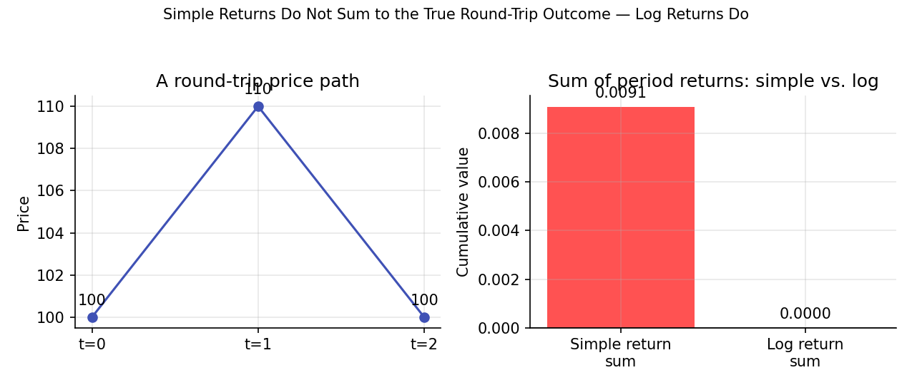

Returns and Log Returns¶
Learning objectives
By the end of this lecture you should be able to:
- [ ] Define simple and logarithmic (log) returns precisely, and convert between them
- [ ] Explain why log returns — and not simple returns — are additive over time, and derive that property
- [ ] Identify the conditions under which simple and log returns are approximately equal, and when that approximation breaks down
- [ ] Compute both return types in pandas from a raw price series and correctly aggregate them over multiple periods
1. Intuition¶
If a stock goes from $100 to $110, most people say "that's a 10% return." That number — the simple return — is intuitive because it matches how you'd compute profit and loss. But it has an awkward property: simple returns don't add up cleanly across multiple periods. If the stock then falls from $110 back to $100, that's a −9.09% simple return, not −10% — even though the price round-tripped exactly.
Log returns solve this by measuring the continuously compounded rate of change. Their defining virtue is that they are additive across time: the log return over two periods is exactly the sum of the log returns over each period. This single property is why almost every piece of statistical machinery in Module 2 (regression, ARIMA, GARCH) and Module 5 (Brownian motion, Itô calculus) is built on log returns rather than simple returns.
2. Mathematical formulation¶
Let \( P_t \) denote the price of an asset at time \( t \).
Simple return over one period:
where:
- \( P_t \) — the asset price at time \( t \) (today)
- \( P_{t-1} \) — the asset price at time \( t-1 \) (the prior period)
- \( R_t \) — the fractional gain or loss over the period, e.g. \( R_t = 0.10 \) means a 10% gain
Log return (continuously compounded return) over one period:
where \( \ln(\cdot) \) is the natural logarithm. Note the direct relationship between the two:
Multi-period log return. For \( k \) periods:
3. Derivation¶
Claim: log returns are additive across time; simple returns are not (they compound multiplicatively).
Start from the multi-period simple return over two periods, from \( P_{t-2} \) to \( P_t \):
So compounded simple returns multiply: \( 1 + R_{t-1,t} = (1+R_t)(1+R_{t-1}) \), not add. This is why, in the intuition above, +10% followed by −9.09% is not the same magnitude as a clean "+10%, −10%."
Now take logs of both sides:
But by definition, \( \ln(1+R_t) = r_t \) is exactly the log return. So:
which generalizes by induction to the sum formula in Section 2. The additivity is a direct consequence of the logarithm turning products into sums — nothing more, but it is exactly the property that makes log returns tractable for statistical modeling: the sum of many independent random variables has well-understood limiting behavior (e.g., the Central Limit Theorem, used heavily in Module 2), while a product of random variables does not, in general.
Small-return approximation. Using the Taylor expansion \( \ln(1+x) \approx x - \frac{x^2}{2} + \cdots \) for small \( x \):
This is why, for typical daily equity returns (usually well under ±5%), simple and log returns are numerically close — but the approximation degrades visibly for large moves (a −50% simple return corresponds to a log return of \( \ln(0.5) \approx -0.693 \), not −0.50).
4. Worked numerical example¶
Take the round-trip example from the introduction: a price that goes $100 → $110 → $100.
Simple returns:
Note these don't sum to zero (\(10.00\% - 9.09\% = 0.91\% \ne 0\)), even though the price ended exactly where it started — the asymmetry is a real property of simple returns, not a rounding artifact.
Log returns:
The log returns sum to exactly zero, correctly reflecting that the price round-tripped with no net change. This is the additivity property proven in Section 3, made concrete.
5. Python implementation¶
import numpy as np
import pandas as pd
prices = pd.Series([100.0, 110.0, 100.0], index=pd.date_range("2026-01-01", periods=3, freq="D"))
# Simple returns
simple_returns = prices.pct_change().dropna()
# Log returns
log_returns = np.log(prices / prices.shift(1)).dropna()
print("Simple returns:\n", simple_returns.round(5))
print("\nLog returns:\n", log_returns.round(5))
print("\nSum of simple returns:", simple_returns.sum().round(5)) # does NOT equal the true round-trip
print("Sum of log returns: ", log_returns.sum().round(5)) # equals ~0, matching the round trip
# Converting between the two
recovered_simple = np.exp(log_returns) - 1
assert np.allclose(recovered_simple, simple_returns)
# Multi-period log return directly from endpoints — matches the sum above
multi_period_log_return = np.log(prices.iloc[-1] / prices.iloc[0])
print("\nDirect multi-period log return:", round(multi_period_log_return, 5))
Continuing directly from the code above, here is the plotting code that produces the chart in Section 6:
import matplotlib.pyplot as plt
fig, axes = plt.subplots(1, 2, figsize=(8.5, 3.6))
# Panel A: the round-trip price path
p = prices.values
axes[0].plot([0, 1, 2], p, marker="o", color="#3f51b5")
for i, val in enumerate(p):
axes[0].annotate(f"{val:.0f}", (i, val), textcoords="offset points", xytext=(0, 8), ha="center")
axes[0].set_xticks([0, 1, 2]); axes[0].set_xticklabels(["t=0", "t=1", "t=2"])
axes[0].set_ylabel("Price"); axes[0].set_title("A round-trip price path")
# Panel B: sum of simple returns vs. sum of log returns
labels = ["Simple return\nsum", "Log return\nsum"]
values = [simple_returns.sum(), log_returns.sum()]
axes[1].bar(labels, values, color=["#ff5252", "#4caf50"])
axes[1].axhline(0, color="black", linewidth=0.8)
axes[1].set_title("Sum of period returns: simple vs. log")
for i, v in enumerate(values):
axes[1].annotate(f"{v:.4f}", (i, v), textcoords="offset points",
xytext=(0, 6 if v >= 0 else -14), ha="center")
fig.suptitle("Simple Returns Do Not Sum to the True Round-Trip Outcome — Log Returns Do", fontsize=10)
fig.tight_layout(rect=[0, 0, 1, 0.93])
plt.show()
6. Visualization¶

7. Financial interpretation¶
The choice between simple and log returns is not cosmetic:
- Simple returns are the right measure for portfolio-level aggregation at a single point in time — the return on a portfolio of assets is the value-weighted average of the assets' simple returns, which is not exactly true for log returns.
- Log returns are the right measure for time-series aggregation and statistical modeling — multi-period compounding, volatility estimation, and the stochastic-process framework in Module 5 (geometric Brownian motion, Itô calculus) are all naturally expressed in log-return space, because that's where additivity (and, by extension, the Central Limit Theorem machinery in Module 2) applies cleanly.
A practical rule of thumb used throughout this curriculum: aggregate returns across assets in simple-return space, and aggregate returns across time in log-return space.
8. Common mistakes¶
Common mistake: summing simple returns across time
Adding up daily simple returns to get a "cumulative return" over a month systematically misstates the true compounded outcome, especially over longer horizons or during volatile periods — the true cumulative simple return requires multiplying \( (1+R_t) \) terms, not summing them, as derived in Section 3.
Common mistake: assuming simple ≈ log always holds
The small-return approximation \( r_t \approx R_t \) is only good for small moves. Applying it uncritically to large single-day moves (crashes, earnings gaps) or to long horizons (multi-year returns) introduces meaningful error — always check the magnitude before relying on the approximation.
Common mistake: averaging simple returns to estimate expected compounded growth
The arithmetic mean of simple returns systematically overstates the actual compounded (geometric) growth rate an investor experiences, a gap that grows with volatility. This distinction — arithmetic vs. geometric mean return — is revisited quantitatively in Module 3.
9. Exercises¶
- A price moves $50 → $60 → $45. Compute the simple return for each period and the log return for each period. Verify that the log returns sum to \( \ln(45/50) \), and check numerically how far the sum of simple returns is from the "true" two-period simple return \( \frac{45-50}{50} \).
- Prove algebraically that if \( R_t = 0 \) for all \( t \) (price never moves), then \( r_t = 0 \) for all \( t \) as well. Then show that the converse also holds.
- Using the Taylor expansion given in Section 3, estimate the log return corresponding to a −20% simple return using only the first two terms of the expansion, and compare it to the exact value \( \ln(0.8) \). How large is the approximation error?
10. Further reading¶
- Investopedia-style explainers are useful for intuition but are not cited here as authoritative sources — cross-check any formula against the textbook references below.
11. References¶
- Campbell, J. Y., Lo, A. W., & MacKinlay, A. C. (1997). The Econometrics of Financial Markets, Chapter 1. Princeton University Press.
- Tsay, R. S. (2010). Analysis of Financial Time Series (3rd ed.), Chapter 1. Wiley.
- Bodie, Z., Kane, A., & Marcus, A. J. (2021). Investments (12th ed.), Chapter 5. McGraw-Hill.
- NumPy Developers. "
numpy.log." numpy.org/doc